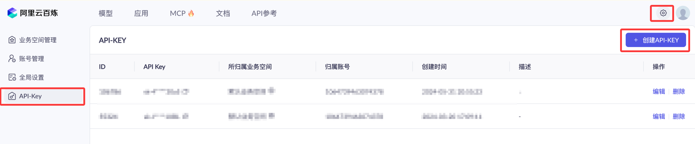
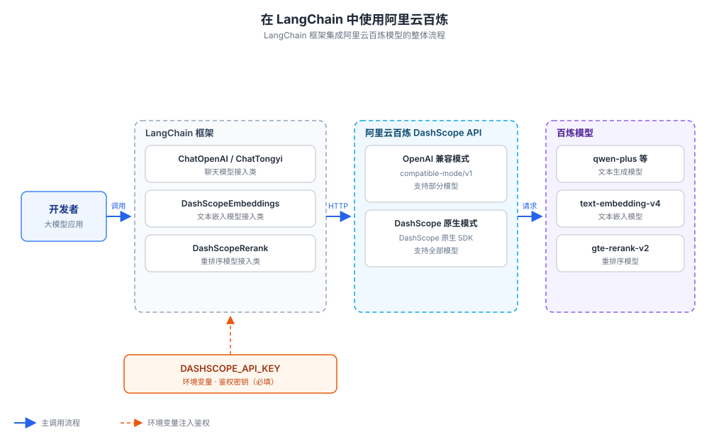
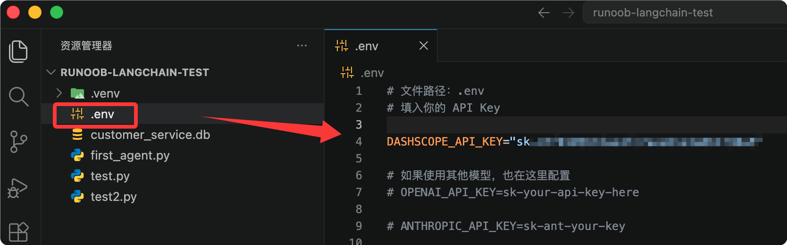

5. LangChain 集成阿里百炼原文↗
LangChain 是当下最主流的大模型应用开发框架，它通过统一的组件接口帮助开发者快速搭建提示词、模型、工具链与智能体应用。
阿里云百炼（DashScope）是阿里云的大模型服务平台，提供通义千问（qwen）系列聊天模型、文本嵌入模型和重排序模型。
本文介绍如何把百炼模型接入 LangChain，覆盖聊天模型、文本嵌入模型、重排序模型三大类，并给出 Python、JavaScript、Java 三种语言的完整示例。
前置准备
我们需要开通阿里云百炼模型服务并获得 API-KEY。
我们可以先使用阿里云主账号访问百炼模型服务平台：https://bailian.console.aliyun.com/，然后点击右上角登录，登录成功后点击右上角的齿轮⚙️图标，选择 API key，然后复制 API key，如果没有也可以创建 API key：


在动手之前，先理解两个关键概念：LangChain 的「模型接入类」，以及百炼的「两种接入模式」。
模型接入类
LangChain 把不同供应商的模型封装成统一的「接入类」。
应用代码面向统一接口编程，切换供应商时只需更换接入类与参数，业务逻辑几乎不用改动。
以聊天模型为例，Python 端有 ChatOpenAI、ChatTongyi 两个接入类，分别对应百炼的 OpenAI 兼容模式与 DashScope 原生模式。
两种接入模式
百炼同时提供两套接入协议，选择不同协议对应不同的 LangChain 接入类。
OpenAI 兼容模式：接口协议与 OpenAI 保持一致，凡是支持 OpenAI 协议的框架都能直接对接，接入成本最低。
DashScope 原生模式：使用百炼自有的 DashScope 协议，可调用百炼全部文本生成模型，包括部署后的自定义模型。
整体接入架构如下图所示：

所谓「OpenAI 兼容接口」，指供应商的 HTTP 接口协议与 OpenAI 保持一致。
只要协议兼容，任何为 OpenAI 编写的代码或工具都可以直接复用，仅需修改接口地址即可。
配置环境变量
所有语言与接入方式统一使用环境变量 DASHSCOPE_API_KEY 保存密钥。
Linux / macOS 在终端导出：
export DASHSCOPE_API_KEY="sk-你的百炼APIKey"
Windows（CMD）设置方式：
set DASHSCOPE_API_KEY=sk-你的百炼APIKey
建议把导出命令写入 shell 配置文件（如 ~/.bashrc、~/.zshrc），避免每次打开终端都重新设置。
通过 .env 文件配置（推荐）
更推荐的做法是把密钥写入项目根目录的 .env 文件，配合 python-dotenv 自动加载到环境变量。
密钥与代码分离，配合 .gitignore 可避免误提交，多人协作时也便于各自维护。
在项目根目录创建 .env 文件：
# 文件路径：项目根目录/.env DASHSCOPE_API_KEY=sk-你的百炼APIKey
比如我们测试的项目 runoob-langchain-test 下创建 .env 文件，并添加配置：

安装 python-dotenv：
pip install python-dotenv
在 Python 代码开头加载 .env 文件：
实例
from dotenv import load_dotenvload_dotenv() # 读取项目根目录的 .env 文件，注入为环境变量
加载后，代码里 os.getenv("DASHSCOPE_API_KEY") 即可读到密钥，效果与手动 export 一致。
在「聊天模型」一节的示例中，已演示了这种加载方式。
.env 属于敏感文件，请加入 .gitignore（写一行 .env），防止密钥被提交到版本库。
请把示例中的密钥替换为真实 Key，切勿分享给他人。
两种接入方式对比
先看一张对比表，再按需选择接入方式。
| 对比项 | OpenAI 兼容模式 | DashScope 原生模式 |
|---|---|---|
| 接入原理 | 复用 OpenAI 协议的接入类 | 使用 DashScope 原生 SDK |
| 支持模型 | 仅部分模型 | 全部文本生成模型及部署后的模型 |
| Python 接入类 | ChatOpenAI | ChatTongyi |
| JavaScript 接入类 | ChatOpenAI | ChatAlibabaTongyi |
| Java 接入类 | OpenAiChatModel | QwenChatModel |
| 适用场景 | 已有 OpenAI 代码需要快速切换 | 需要完整模型能力或使用部署模型 |
两种模式使用同一个域名 dashscope.aliyuncs.com，差异在于路径：OpenAI 兼容模式路径为 /compatible-mode/v1，DashScope 原生模式的路径由 SDK 内置。
聊天模型（Chat Model）
聊天模型是最常用的一类模型，用于多轮对话、问答、内容生成等任务。
下面按语言介绍接入方式，示例模型统一使用 qwen-plus，可按需更换。
Python：OpenAI 兼容方式
使用 langchain_openai 包中的 ChatOpenAI 接入类，把百炼当作一个 OpenAI 服务来调用。
先安装依赖：
pip install langchain_openai
示例代码：
实例
from langchain_openai import ChatOpenAIfrom dotenv import load_dotenv # 读取 .env 文件中的配置
import os
load_dotenv() # 从项目根目录的 .env 加载密钥等环境变量
# 创建聊天模型实例，通过 OpenAI 兼容协议对接百炼
chatLLM = ChatOpenAI(
api_key=os.getenv("DASHSCOPE_API_KEY"), # 从环境变量读取百炼 API Key（必填）
base_url="https://dashscope.aliyuncs.com/compatible-mode/v1", # 百炼 OpenAI 兼容接口地址（必填）
model="qwen-plus", # 模型名称（必填），此处以 qwen-plus 为例
# 其它可选参数：temperature（生成温度）、max_tokens（最大输出长度）等
)
# 构造多轮对话消息列表
messages = [
{"role": "system", "content": "You are a helpful assistant."}, # 系统消息，设定助手角色
{"role": "user", "content": "你是谁？"}, # 用户消息，提问内容
]
# 发起调用，返回结构化响应对象
response = chatLLM.invoke(messages)
print(response.model_dump_json())
输出结果（省略部分字段）：
{
"content": "我是通义千问，由阿里云开发的大语言模型，可以回答你的问题、协助创作、提供建议等。",
"usage": { "prompt_tokens": 12, "completion_tokens": 28, "total_tokens": 40 }
}
调用成功后返回 AIMessage 对象，model_dump_json() 可将其序列化为 JSON，方便查看完整响应。
Python：DashScope 原生方式
使用 langchain-community 包中的 ChatTongyi 接入类，走 DashScope 原生协议，支持流式输出。
ChatTongyi 来自 langchain-community 社区包，该包与 dashscope 已停止维护。
新项目建议优先使用 OpenAI 兼容方式的 ChatOpenAI 接入，仅当需要 DashScope 原生能力（如部署模型）时再考虑本方式。
先安装依赖：
pip install langchain-community dashscope
示例代码：
实例
from langchain_community.chat_models.tongyi import ChatTongyifrom langchain_core.messages import HumanMessage
from dotenv import load_dotenv # 读取 .env 文件中的配置
import os
load_dotenv() # 从项目根目录的 .env 加载密钥等环境变量
# 创建通义千问聊天模型，使用 DashScope 原生协议
chatLLM = ChatTongyi(
model="qwen-plus", # 模型名称（必填）
dashscope_api_key=os.getenv("DASHSCOPE_API_KEY"), # 从环境变量读取 API Key（必填）
streaming=True, # 开启流式输出
)
# 流式调用，逐段接收并打印响应内容
res = chatLLM.stream([HumanMessage(content="hi")], streaming=True)
for r in res:
print("chat resp:", r.content)
输出结果：
chat resp: 你好 chat resp: ！我是通义千问，有什么可以帮您的吗？
流式输出让模型在生成的同时逐段返回内容，适合需要打字机效果的聊天界面。
文本嵌入模型（Embedding Model）
嵌入模型把文本转换成语义向量，是 RAG（检索增强生成）、语义搜索等应用的基础。
模型选型
百炼提供多个版本的嵌入模型，可用 MTEB、CMTEB 两个评估指标对比效果，数值越大越好。
| 模型 | MTEB | MTEB（检索任务） | CMTEB | CMTEB（检索任务） |
|---|---|---|---|---|
| text-embedding-v1 | 58.30 | 45.47 | 59.84 | 56.59 |
| text-embedding-v2 | 60.13 | 49.49 | 62.17 | 62.78 |
| text-embedding-v3（1024 维度） | 63.39 | 55.41 | 68.92 | 73.23 |
| text-embedding-v4（1024 维度） | 68.36 | 59.30 | 70.14 | 73.98 |
text-embedding-v3 与 text-embedding-v4 通过 LangChain 调用时无法指定向量维度，默认输出 1024 维向量。
版本越高效果越好，优先选择 v4。
Python 示例
百炼的嵌入接口兼容 OpenAI 接口规范，直接使用 langchain-openai 包中的 OpenAIEmbeddings 接入类，把 base_url 指向百炼的兼容端点即可。
无需安装 langchain-community 与 dashscope 这两个已停止维护的包。
先安装依赖：
pip install langchain-openai
OpenAIEmbeddings 需要三个关键参数：model（嵌入模型名）、api_key（百炼密钥）、base_url（百炼 OpenAI 兼容端点）。
base_url 固定为 https://dashscope.aliyuncs.com/compatible-mode/v1，与聊天模型的兼容端点一致。
示例代码：
实例
from langchain_openai import OpenAIEmbeddingsfrom dotenv import load_dotenv # 读取 .env 文件中的配置
import os
load_dotenv() # 从项目根目录的 .env 加载密钥等环境变量
# 创建嵌入模型实例，通过 OpenAI 兼容协议对接百炼
# chunk_size=10：百炼 Embedding 接口单次请求最多接受 10 条文本，
# OpenAIEmbeddings 默认一次打包 1000 条，知识库稍大就会超限报错。
embeddings = OpenAIEmbeddings(
model="text-embedding-v4", # 嵌入模型名称（必填），此处以 v4 为例
api_key=os.getenv("DASHSCOPE_API_KEY"), # 从环境变量读取百炼 API Key（必填）
base_url="https://dashscope.aliyuncs.com/compatible-mode/v1", # 百炼 OpenAI 兼容端点（必填）
check_embedding_ctx_length=False,
chunk_size=10,
)
# 对单个查询文本进行向量化
text = "This is a test document."
query_result = embeddings.embed_query(text)
print("文本向量长度：", len(query_result), sep='')
# 批量对多个文档进行向量化
doc_results = embeddings.embed_documents(
[
"Hi there!",
"Oh, hello!",
"What's your name?",
"My friends call me World",
"Hello World!"
])
print("文本向量数量：", len(doc_results), "，文本向量长度：", len(doc_results[0]), sep='')
输出结果：
文本向量长度：1024 文本向量数量：5 ，文本向量长度：1024
embed_query 用于把用户查询向量化，embed_documents 用于把候选文档批量向量化，两者输出的向量维度一致，才能计算相似度。
重排序模型（Reranker Model）
重排序模型对检索结果做二次打分排序，能显著提升 RAG 应用的回答质量。
模型参数
百炼提供以下重排序模型，根据语种、成本与场景选择：
| 模型 | 最大 Document 数 | 单条最大输入 | 语种支持 | 单价（每千 Token） | 适用场景 |
|---|---|---|---|---|---|
| qwen3-vl-rerank | 100 | 8,000 Token | 中、英、日、韩等 33 种主流语言 | 图片 0.0018 元 / 文字 0.0007 元 | 图像聚类、跨模态搜索、图片检索 |
| qwen3-rerank | 500 | 4,000 Token | 中、英、西、法、日、韩等 100+ 语种 | 0.0005 元 | 文本语义检索、RAG 应用 |
| gte-rerank-v2 | — | 30,000 Token | 中、英、日、韩、泰等 50 余语种 | 0.0008 元 | 长文本重排序 |
Python 示例
使用 langchain-community 包中的 DashScopeRerank 接入类。
该示例使用 langchain-community 社区包中的 DashScopeRerank。
langchain-community 与 dashscope 已停止维护，新项目请关注百炼官方提供的替代接入方式。
先安装依赖：
pip install langchain-community dashscope
示例代码：
实例
from langchain_community.document_compressors.dashscope_rerank import DashScopeRerankfrom dotenv import load_dotenv # 读取 .env 文件中的配置
load_dotenv() # 从项目根目录的 .env 加载密钥等环境变量
# 模拟检索返回的候选文本列表
sequence = ["runoob 是一个提供编程教程的中文学习网站", "text2", "text3"]
# 创建重排序模型实例
reranker = DashScopeRerank(
model="gte-rerank-v2", # 重排序模型名称（必填）
)
# 根据查询对候选文本重排序，返回得分最高的 top_n 条
print(reranker.rerank(documents=sequence, query="runoob 是什么", top_n=2))
rerank 方法根据 query 对候选文档重新打分排序，top_n 指定返回数量，常用于 RAG 检索后的精排阶段。
JavaScript 与 Java 接入
JavaScript：OpenAI 兼容方式
Node.js 端使用 @langchain/openai 包的 ChatOpenAI 接入类。
先安装依赖：
npm install @langchain/openai @langchain/core
示例代码：
实例
import { ChatOpenAI } from "@langchain/openai";// 创建聊天模型实例，通过 OpenAI 兼容协议对接百炼
const llm = new ChatOpenAI({
model: "qwen-plus", // 模型名称（必填），此处以 qwen-plus 为例
apiKey: process.env.DASHSCOPE_API_KEY, // 从环境变量读取百炼 API Key（必填）
configuration: {
baseURL: "https://dashscope.aliyuncs.com/compatible-mode/v1", // 百炼 OpenAI 兼容接口地址（必填）
},
});
// 发起对话调用，返回 AI 消息对象
const aiMsg = await llm.invoke([
{ role: "system", content: "You are a helpful assistant that translates English to French. Translate the user sentence." }, // 系统消息
{ role: "user", content: "I love programming." }, // 用户消息
]);
console.log('---------------------------');
console.log(aiMsg.content);
输出结果：
--------------------------- J'adore la programmation.
JavaScript：DashScope 原生方式
使用 @langchain/community 包中的 ChatAlibabaTongyi 接入类。
先安装依赖：
npm install @langchain/community @langchain/core
示例代码：
实例
import { ChatAlibabaTongyi } from "@langchain/community/chat_models/alibaba_tongyi";import { HumanMessage } from "@langchain/core/messages";
// 默认模型为 qwen-turbo，仅需提供 API Key
const qwenTurbo = new ChatAlibabaTongyi({
alibabaApiKey: process.env.DASHSCOPE_API_KEY, // 从环境变量读取 API Key（必填）
});
// 使用 qwen-plus，可额外指定 temperature 等生成参数
const qwenPlus = new ChatAlibabaTongyi({
model: "qwen-plus", // 模型名称（必填）
temperature: 1, // 生成温度，值越大输出越发散
alibabaApiKey: process.env.DASHSCOPE_API_KEY, // 从环境变量读取 API Key（必填）
});
const messages = [new HumanMessage("Hello")];
// 分别调用两个模型并打印结果
const res = await qwenTurbo.invoke(messages);
const res2 = await qwenPlus.invoke(messages);
console.log('---------------------------');
console.log(res.content);
console.log('---------------------------');
console.log(res2.content);
Java：OpenAI 兼容方式（LangChain4j）
Java 生态使用 LangChain4j 框架，通过 langchain4j-open-ai 模块对接百炼。
LangChain4j 1.0.0-beta3 要求 Java 17 及以上版本。
使用 Java 11 编译会报错 Unsupported class file major version 61，升级 JDK 即可解决。
在 pom.xml 中加入依赖：
<!-- 文件路径：pom.xml -->
<dependency>
<groupId>dev.langchain4j</groupId>
<artifactId>langchain4j-open-ai</artifactId>
<version>1.0.0-beta3</version>
</dependency>
示例代码：
实例
import dev.langchain4j.data.message.SystemMessage;import dev.langchain4j.data.message.UserMessage;
import dev.langchain4j.model.chat.ChatLanguageModel;
import dev.langchain4j.model.openai.OpenAiChatModel;
public class LangChainOpenAITest {
public static void main(String[] args) {
// 创建聊天模型，复用 OpenAI 协议对接百炼
ChatLanguageModel model = OpenAiChatModel.builder()
.apiKey(System.getenv("DASHSCOPE_API_KEY")) // 从环境变量读取 API Key（必填）
.baseUrl("https://dashscope.aliyuncs.com/compatible-mode/v1") // 百炼 OpenAI 兼容地址（必填）
.modelName("qwen-plus") // 模型名称（必填）
.build();
SystemMessage systemMessage = SystemMessage.from("你是心理专家"); // 系统消息，设定角色
UserMessage userMessage = UserMessage.from("你好"); // 用户消息
System.out.println(model.chat(systemMessage, userMessage).aiMessage().text());
}
}
Java：DashScope 原生方式（LangChain4j）
使用 langchain4j-community-dashscope 模块，支持普通调用与流式调用。
在 pom.xml 中加入依赖：
<!-- 文件路径：pom.xml -->
<dependency>
<groupId>dev.langchain4j</groupId>
<artifactId>langchain4j-community-dashscope</artifactId>
<version>1.0.0-beta3</version>
</dependency>
示例代码（普通调用与流式调用）：
实例
import dev.langchain4j.community.model.dashscope.QwenChatModel;import dev.langchain4j.community.model.dashscope.QwenStreamingChatModel;
import dev.langchain4j.data.message.ChatMessage;
import dev.langchain4j.data.message.SystemMessage;
import dev.langchain4j.data.message.UserMessage;
import dev.langchain4j.model.chat.ChatLanguageModel;
import dev.langchain4j.model.chat.StreamingChatLanguageModel;
import dev.langchain4j.model.chat.request.ChatRequest;
import dev.langchain4j.model.chat.response.ChatResponse;
import dev.langchain4j.model.chat.response.StreamingChatResponseHandler;
public class LangChainDashScopeTest {
public static void main(String[] args) {
chatLanguageModelTest(); // 普通调用
// streamingChatLanguageModelTest(); // 流式调用，按需取消注释
}
// 普通调用：一次性返回完整结果
public static void chatLanguageModelTest() {
ChatLanguageModel qwenModel = QwenChatModel.builder()
.apiKey(System.getenv("DASHSCOPE_API_KEY")) // 从环境变量读取 API Key（必填）
.modelName("qwen-plus") // 模型名称（必填）
.build();
// 构造请求，消息按时间顺序排列
ChatRequest request = ChatRequest.builder()
.messages(new ChatMessage[]{
SystemMessage.from("你是心理专家"), // 系统消息
UserMessage.from("你好") // 用户消息
})
.build();
System.out.println(qwenModel.chat(request).aiMessage().text());
}
// 流式调用：逐段接收生成的文本
public static void streamingChatLanguageModelTest() {
StreamingChatLanguageModel model = QwenStreamingChatModel.builder()
.apiKey(System.getenv("DASHSCOPE_API_KEY"))
.modelName("qwen-plus")
.build();
model.chat("你好", new StreamingChatResponseHandler() {
@Override
public void onPartialResponse(String s) { // 每生成一段回调一次
System.out.println(s);
}
@Override
public void onCompleteResponse(ChatResponse chatResponse) { // 生成完成
System.out.println("对话结束");
System.exit(0);
}
@Override
public void onError(Throwable throwable) { // 发生异常
System.out.println("出现异常");
System.exit(0);
}
});
}
}
LangChain4j 还提供 Spring Boot Starter，无需手动构建模型对象，在 application.properties 中配置即可。
实例
# 文件路径：application.properties# API Key（必填）
langchain4j.open-ai.chat-model.api-key=${DASHSCOPE_API_KEY}
# 模型名称（必填）
langchain4j.open-ai.chat-model.model-name=qwen-plus
# OpenAI 兼容接口地址（必填）
langchain4j.open-ai.chat-model.base-url=https://dashscope.aliyuncs.com/compatible-mode/v1
# 服务端口
server.port=9000
DashScope 原生方式的 Starter 配置项同名，只需把前缀换成 langchain4j.community.dashscope.chat-model，且无需配置 base-url。
注意事项 / 常见问题
接入过程中遇到的问题，可对照下面的清单快速定位。
Java 版本要求
LangChain4j 1.0.0-beta3 需要 Java 17 及以上版本。
使用 Java 11 编译会报 Unsupported class file major version 61，升级 JDK 即可解决。
OpenAI 兼容模式只支持部分模型
OpenAI 兼容接口只支持百炼的部分模型，完整列表见官方文档。
如果调用的模型不在支持范围内，换成 DashScope 原生模式即可。
嵌入向量默认维度
text-embedding-v3 / v4 通过 LangChain 调用时默认输出 1024 维向量，无法手动指定维度。
数据库建表时请预留 1024 维的向量字段。
API Key 安全
不要把 API Key 硬编码在代码中，统一通过 DASHSCOPE_API_KEY 环境变量注入。
线上环境建议配合阿里云密钥管理服务使用。
参考链接
以下官方文档可帮助你深入了解相关细节：
| 主题 | 链接 |
|---|---|
| 获取 API Key | https://help.aliyun.com/zh/model-studio/get-api-key |
| 配置环境变量 | https://help.aliyun.com/zh/model-studio/configure-api-key-through-environment-variables |
| 百炼模型列表 | https://help.aliyun.com/zh/model-studio/getting-started/models |
| OpenAI 兼容模型列表 | https://help.aliyun.com/zh/model-studio/compatibility-of-openai-with-dashscope |
| Python ChatOpenAI 文档 | https://python.langchain.com/docs/integrations/chat/openai/ |
| Python OpenAIEmbeddings 文档 | https://python.langchain.com/docs/integrations/text_embedding/openai/ |
| Python ChatTongyi 文档 | https://python.langchain.com/docs/integrations/chat/tongyi/ |
| LangChain4j DashScope 文档 | https://docs.langchain4j.dev/integrations/language-models/dashscope |